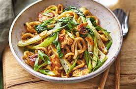

Garlic & hoisin-braised tofu, udon and pak choi

Prep:10 mins
Cook:10 mins
Serves:4
A mid-week favourite that packs a flavour punch for those days when you want something quick and
healthy. Don't like pak choi? Swap it for your favourite veg: tenderstem broccoli or sugarsnap
peas work well. This vegan stirfry can be whipped up in as little as 20 mins so why not give it a whirl?
Ingredients
- 1 tbsp vegetable oil
- 4 garlic cloves, thinly sliced
- 4 spring onions, thinly sliced (green and white parts seperated)
- a thumb sized piece of fresh ginger, peeled and grated
- 2 tsp chilli paste
- 300g pack extra firm tofu, drained and pressed dry in a clean paper towel
- 300g straight to wok udon thick noodles
- 2 packs of pak choi, sliced into 2cm ribbons
For the sauce
- 3 tbsp rice wine vinegar
- 3 tbsp soy sauce
- 4 tbsp soy sauce
Steps
- Get everything ready before you start, as it comes together quickly.
Combine the sauce ingredients in a small bowl with 150ml freshly boiled
water and set aside.
- Heat the oil in a wok (or deep frying pan) over a high heat. Add the whites
of the salad onions, ginger, garlic and chilli paste and cook until the
fragrance is released, being careful not to let it catch. Using your hands,
crumble the tofu into the pan. You may need to tear any larger pieces.
- Stir it all together then stir fry for 4 minutes, scraping the bottom of the
pan to mix in any crusty bits. Add the noodles to the pan, gently separating
them with your fingers, and stir fry for 2 minutes. Add the sauce, mix, then
add the sliced pak choi and stir to mix well.
- Lower the heat and simmer for 2 minutes, or until the pak choi is wilted and
the sauce has slightly thickened. Serve immediately, topped with the remaining
salad onions.
Enjoy!